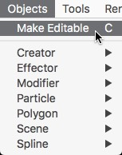
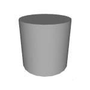
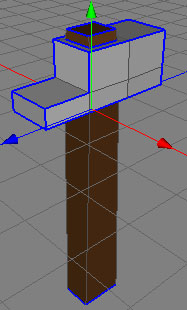
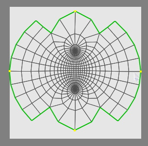

Polygonobject
The Polygonobject is the father of every object in Cheetah3D which has a surface. To these objects belong all the parametric polygon objects and all the creator objects. In the manual, the Polygonobject will be often be called a raw Polygonobject, so that there is no confusion over which objects are derived from the Polygonobject. A Polygonobject can be made out of triangles (three points), quads (four points) and ngons (n points, where n is any natural number).
Caution! The Polygonobject is the only object where the mesh can be modified with the polygon tools. If you want to modify the mesh of another object you first have to make it editable.
You can create a polygon object directly using the menu command "Objects Polygonobject
Polygonobject Polygonobject". This object is empty and doesn't contain any points or polygons. You can add points to this object with in insert point tool and thereafter you can then mesh these points together with the create polygon or the create polygon strip tool.
Polygonobject". This object is empty and doesn't contain any points or polygons. You can add points to this object with in insert point tool and thereafter you can then mesh these points together with the create polygon or the create polygon strip tool.
You could also create a parametric polygon object (Box, Ball, etc.) or a creator object (Boolean, Lathe, etc.) as a starting point, but you won't be able to modify the mesh of these objects. If you want to modify the mesh manually with the polygon tools you have to make the object editable. You can do this by selecting the object and using the menu command "Objects Make editable". Now the parametric or creator object will lose it's parametric properties and will be transformed into a raw Polygonobject which is editable.
Make editable". Now the parametric or creator object will lose it's parametric properties and will be transformed into a raw Polygonobject which is editable.

It is also possible to make the parametric polygon object editable by double clicking onto the object icon in the object browser.
Normals
Every polygon object has a property group called "Smooth". With these parameters you can control which normal calculation algorithm is used the calculate the shading normals of the polygon object.

Cylinder with phong normals (left). Cylinder with constrained normals (right).
Creases
Creases are sharp features in the context of subdivision surfaces. You can tag an edge of a mesh as a crease in Cheetah3D by selecting that edge in the edge mode and then using the menu command "Selection Toggle crease". An edge which was tagged as a crease will be displayed blue in edge mode (if it is not currently selected). Use the command "Selection
Toggle crease". An edge which was tagged as a crease will be displayed blue in edge mode (if it is not currently selected). Use the command "Selection Toggle crease" again to untag a creased edge. If you now use the subdivision command or the Subdivision object the tagged edge will be handled as a crease. See the images below for an example of how creases affect the way a subdivision operates.
Toggle crease" again to untag a creased edge. If you now use the subdivision command or the Subdivision object the tagged edge will be handled as a crease. See the images below for an example of how creases affect the way a subdivision operates.

Seams
Seams are polygon edges which are needed for unwrapping a polygon object with the Unwrap UV tool. For example if you want to unwrap a ball you have to assign some creases so that the Unwrap UV tool knows where to tear up the mesh of the closed ball polygon mesh. Otherwise the ball will just be pressed flat but it won't be unwrapped.
Seams are always highlighted green in the 3D view and in the UV Editor. Use the "Selection Toggle seam" command to set and unset edge selections to seams.
Toggle seam" command to set and unset edge selections to seams.
Pinned UV
Pinned UV coords are UV coords which won't be modified by the Unwrap UV tool. They can be used to influence the result of the Unwrap UV tool. Especially setting points which are on a seam as pinned UV coords can help to stretch the unwrapped mesh into the shape which is desired. Use the "Toggle Pinned UV" command of the UV editor context menu to set and unset point selections to pinned UV's. Pinned UV coords are highlighted in yellow.

Left a unwrapped ball without pinned UV coords. Right the result of the
unwrap when using 4 pinned UV coords.
Multiple polygon selections
Every Polygonobject has 16 totally independent polygon selections. You can switch between these selections with the polygon selection property in the properties browser.
These multiple polygon selections are normally used to assign more than one material to a mesh. You can assign a brown material to polygon selection 1 and a grey material to polygon selection 2 (as in the example above). See also the material tag for using multiple materials per mesh.
The polygon tools always use the current polygon selection. The polygon selections won't be destroyed by using polygon tools normally.
Properties
- Polygon selection: The current polygon selection.
- UV set: The currently editable/used UV set.
- Smooth:
- Flat: The vertices normals of a polygon are just the normal of the polygon plain.
- Phong: The normal of every polygon corner is calculated by averaging the normals of all polygons which share that point. Take care, since this algorithm can produce undesirable artifacts (see below for a visual example).
- Constrained: Only the normals of those polygons which have a smaller angle between the two plains created by the polygons will be averaged. This operation is much more expensive to calculate than the unconstrained case, so take care to only use it when it is necessary.
- Normal break: Works like the Constrained normal calculation algorithm just the normals always break at creases (see below).
- Smooth angle: Determines the angle for the constrained calculations. Try playing around with this value and you will immediately understand the effect is has on your polygon objects.
- Display type: Determines how the polygon object is displayed in the 3D view.
- Ghosted: Displays the mesh ghosted within the 3D view.